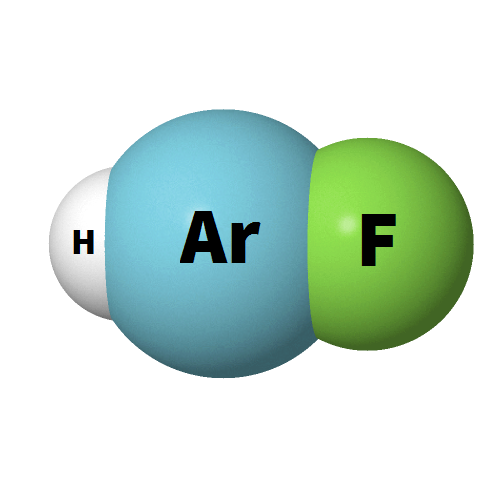

it is widely acknowledged that preparation of compounds with noble-gas atoms
is difficult, if not impossible. The main question of my research as a graduate
student revolved around the question of whether such compounds can exist in
nature, on earth or other planets. We were particularly interested in a relatively new family of noble-gas
containing compounds, the HNgY family, where H is hydrogen, Ng is a noble-gas
and Y is an electron-withdrawing group such as ·OH or ·CCH.
There are (at least) two fascinating facts about the HNgY compounds:
(1) They can be made from compounds that exist in nature such as water.
The molecule HXeOH is made from the insertion of Xe into an
H2O molecule and HXeCCH is made from the insertion for
Xe to acetylene. (2) The only known chemically bound compound of argon,
HArF, belongs to this family.
There is a good reason to think that noble-gas compounds can exist in nature.
Perhaps the most interesting indication is the "problem of
the missing xenon". In simple words, xenon is found on earths atmosphere
(as well as on mars) in lower quantities than expected. A plausible
explanation is that xenon is hidden in naturally occurring compounds on earth.
All noble-gas compounds are meta-stable, that is, their lifetime is determined
by the kinetic barriers for their decomposition. Consequently, if the barrier for
decomposition is high - they can remain stable even at high temperature.
Surprisingly, we have found that HXeCCH is protected by high barriers of
about −270 kJ/mol and is expected to survive for about a day at room temperature,
before it decomposes.
Another interesting thing that we've found, that formation of complexes can
stablize the molecule. The simulation on the right shows a molecular dynamics
simulation of of HXeCCH solvated in C
2H
2. This droplet
is stable at 150 K (at least). This is the fist prediction of a condensed
phase of a noble-gas containing complex.
Simulation of HXeCCH solvated in HCCH at 150K. This droplet remains stable at least a couple of
picoseconds.